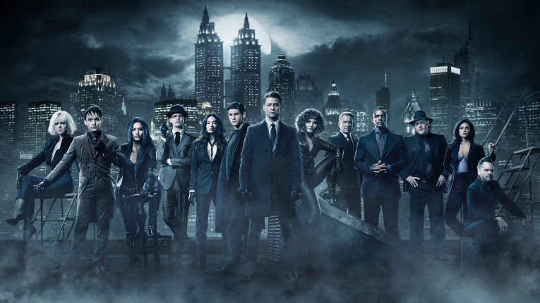
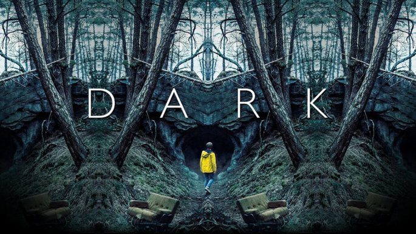
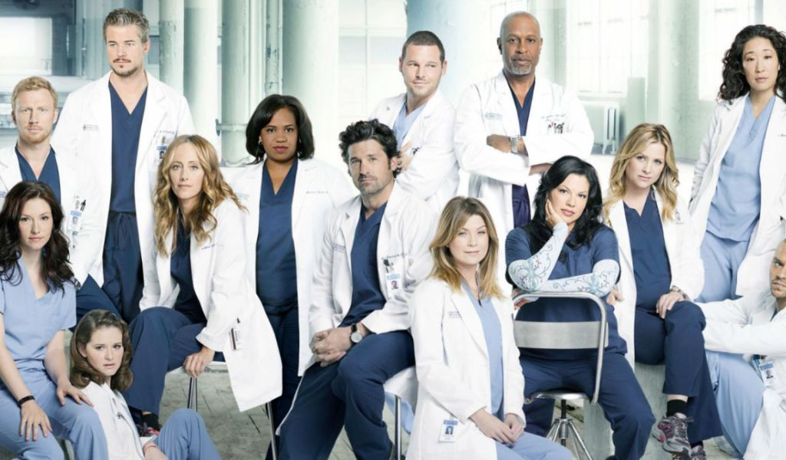

Good Series:
Top 15:
1. Blindspot:
When a beautiful woman with no memory appears nude in Times Square, FBI agent Kurt Weller and his team discover tattoos on her body are related to crimes that require resolution.
`
2. Orphan Black:
Is an American series broadcast in 2013, of science fiction, drama and action genre. We meet Sarah (Tatiana Maslany), a young orphan with nowhere to fall dead who witnesses the suicide of a girl who is identical to her. Sarah will decide to take on her identity, bank account, home and so on only to find herself in the midst of a tremendous conspiracy with clones in the middle.
3. Lucifer:
Lucifer's story is the one we all know: an angel fallen from heaven. However, this lord of hell is bored with his own existence. For this reason, Lucifer decides to leave his kingdom and go to the city of Los Angeles to discover what the mortal world can offer him. In his search for "what to do with his time" he decides to open a distinguished nightclub, called Lux, and dedicates himself to enjoying his favorite things: wine, women and music. However, his peaceful life is altered when a woman is brutally murdered near his club. Suddenly, he feels that justice must be done and so he begins to help the police try to solve various murder cases, thus becoming a kind of collaborator.
4. Peaky Blinders:
Peaky Blinders is a BBC drama that tells the story of the gypsy family Shelby and her gangster gang, a group of people characterized by their berets with blades and owners of illegal affairs, who dominate clandestine gambling and are ruled by extortion.
5. Gotham:
Gotham will be set in the Batman universe that explores the past of James Gordon, the Gotham City police chief, and the villains who made this fictional American city famous.

6. The vampire diaries:
A 17-year-old girl who tries to get on with her life after the loss of her parents in a tragic accident. The action of the series takes place in Mystic Falls, a fictional town located in Virginia that, apparently, is enchanted by supernatural beings. Salvatore brothers, Stefan and Damon, live in this mysterious place. The plot focuses on the love triangle formed between these three characters, all of them with a dark past. We soon found out about the vampire nature of the Salvatore brothers and that they find Elena virtually identical to the woman who turned them into vampires and with whom they were both in love
7. The 100:
History focuses on what happens to civilization almost one hundred years after a nuclear war devastated it. After that catastrophic nuclear war occurred, there was an escape from humans who managed to survive. The future of the survival of the human race is in the hands of some young criminals who managed to flee and save themselves from war. These have since lived in a spaceship. From The Ark space station, one hundred of the survivors are sent back to planet earth to investigate it and to study the possibilities that exist to colonize the earth again.
8. Teen Wolf:
Scott McCall (Tyler Posey '), is the typical high school boy with a quiet life. But everything changes when he is bitten by a werewolf. Scott immediately begins to experience changes in his body: sharp fangs, more hair, claws. With the full moon he completely transforms, and that's when he is unable to control his violent werewolf nature. From that moment on, he must control himself so as not to harm those around him and not be discovered. But on the other hand, his conversion is not such a bad thing, as his life goes from anonymity to popularity in no time. His best friend Stiles will be a great support when it comes to controlling his new powers and facing the dangers that lie in wait for him from now on. Scott will also be drawn to the mysterious Allison, the girl of his dreams until he discovers that she is descended from a lineage of werewolf hunters. Finally, Derek, a mysterious werewolf who will act as his mentor in everything supernatural and who will guide him to find the "place where he belongs", will also be present from now on in his life.
9. Friends:
Rachel Green escapes her own wedding and searches for her childhood friend Monica Geller, a chef from New York. They become roommates, and Rachel joins Monica's social circle consisting of singles in their 20s: frustrated actor Joey Tribbiani, professional businessman Chandler Bing, masseuse and musician Phoebe Buffay, and newly divorced paleontologist Ross Geller, Monica's older brother. To earn money, Rachel becomes a waitress at Central Perk, a Manhattan coffee shop where the group spends most of their time; when they are not there, the six are usually found in Monica and Rachel's nearby apartment or Joey and Chandler's across the hall.
10. Sex education:
Rachel Green escapes her own wedding and searches for her childhood friend Monica Geller, a chef from New York. They become roommates, and Rachel joins Monica's social circle consisting of singles in their 20s: frustrated actor Joey Tribbiani, professional businessman Chandler Bing, masseuse and musician Phoebe Buffay, and newly divorced paleontologist Ross Geller, Monica's older brother. To earn money, Rachel becomes a waitress at Central Perk, a Manhattan coffee shop where the group spends most of their time; when they are not there, the six are usually found in Monica and Rachel's nearby apartment or Joey and Chandler's across the hall.
11. Dark:
In Winden (2019), a small fictional town located in Germany, the disappearance of a child puts all neighbors on alert. The police force tries to investigate the case without finding an explanation. Four families live in the municipality: the Kahnwald, the Nielsen, the Doppler and the Tiedemann. All remain united in the face of mysterious events. However, everything changes the day Mikkel, the youngest son of the Nielsen family, disappears without a trace.

12. Marginal:
Miguel Palacios is a policeman who is imprisoned in a prison lost in the middle of nowhere. One day, a judge summons him to help him solve the kidnapping of his daughter. To do this, Miguel must change his identity to infiltrate the San Onofre prison in Buenos Aires and try to find information about the gang that operates in the prison. According to the judge, this group is responsible for the kidnapping of his daughter and Miguel is the only one who can find the truth. Thus, the policeman becomes Pastor Peña and infiltrates a world where a small mistake can end his life.
13. You:
You is a 21st century love story about an obsessive but brilliant 20-year-old who uses the hyper connectivity offered by modern technology to make the woman of his dreams fall in love with him. "What would you do for love?" When a bookstore manager meets a writer, she gets her answer: anything. Using the Internet and social networks as his tools, he manages to gather his most intimate details to get closer to her and, what started as a charming crush, becomes an obsession while he, strategically and silently, gets rid of all obstacles ( and people) who cross his path.
14. Grey's Anatomy:
Grey's Anatomy is a drama focused on the personal and professional lives of five surgical interns, their supervisors, and the personal and romantic relationships that arise between them. Meredith Gray, the daughter of a renowned general surgeon named Ellis Gray, has just been accepted into the residency program at Seattle Grace Hospital. During her time as a resident, Gray works alongside doctors Cristina Yang, Izzie Stevens, Alex Karev, and George O'Malley, who struggle to balance their personal lives with hectic work and training schedules. They are supervised during their internship by Miranda Bailey, a high-ranking resident who works to assist Derek Shepherd, the chief of neurosurgery and Meredith's love interest; Preston Burke, the cardio boss, who becomes Yang's fiancé; and Richard Webber, the Chief of Surgery and Deputy Surgeon General.

15. The Innocents:
June's new life in London is much more complicated than she could have imagined when she is at the heart of a kidnapping plan for no apparent reason. Under extreme pressure, her body and identity begin to change unexpectedly. The question is not how, but why.